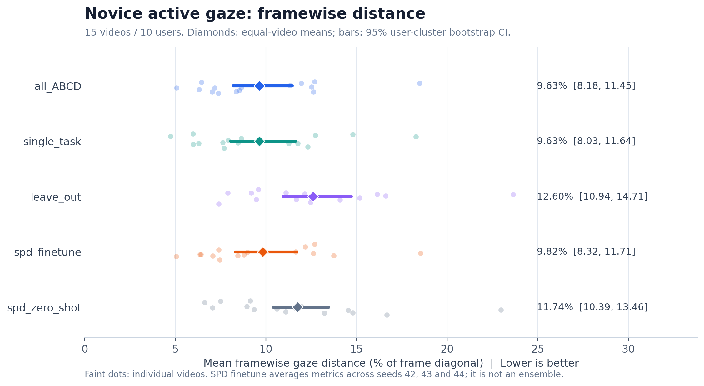
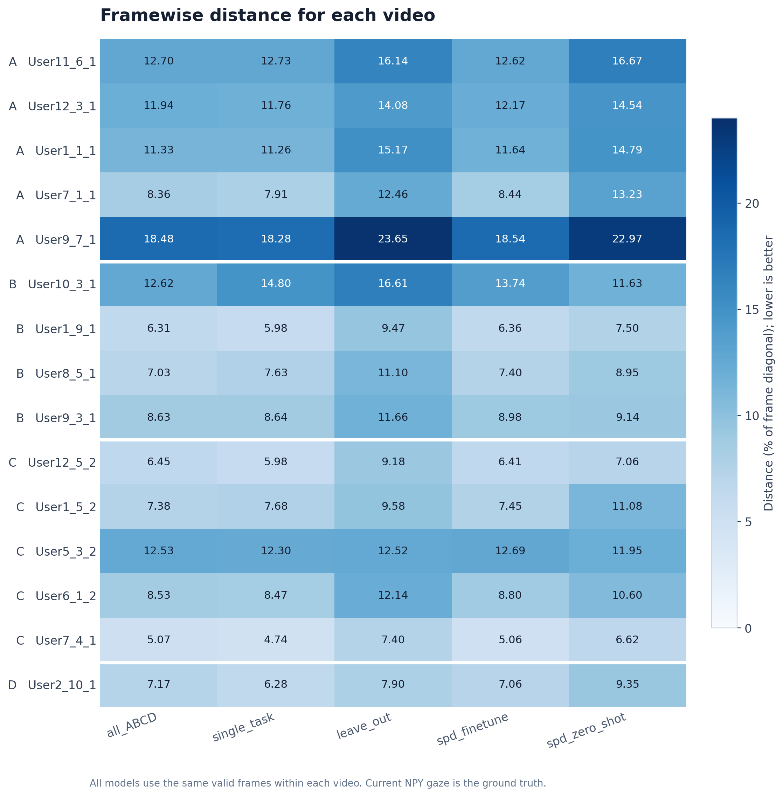
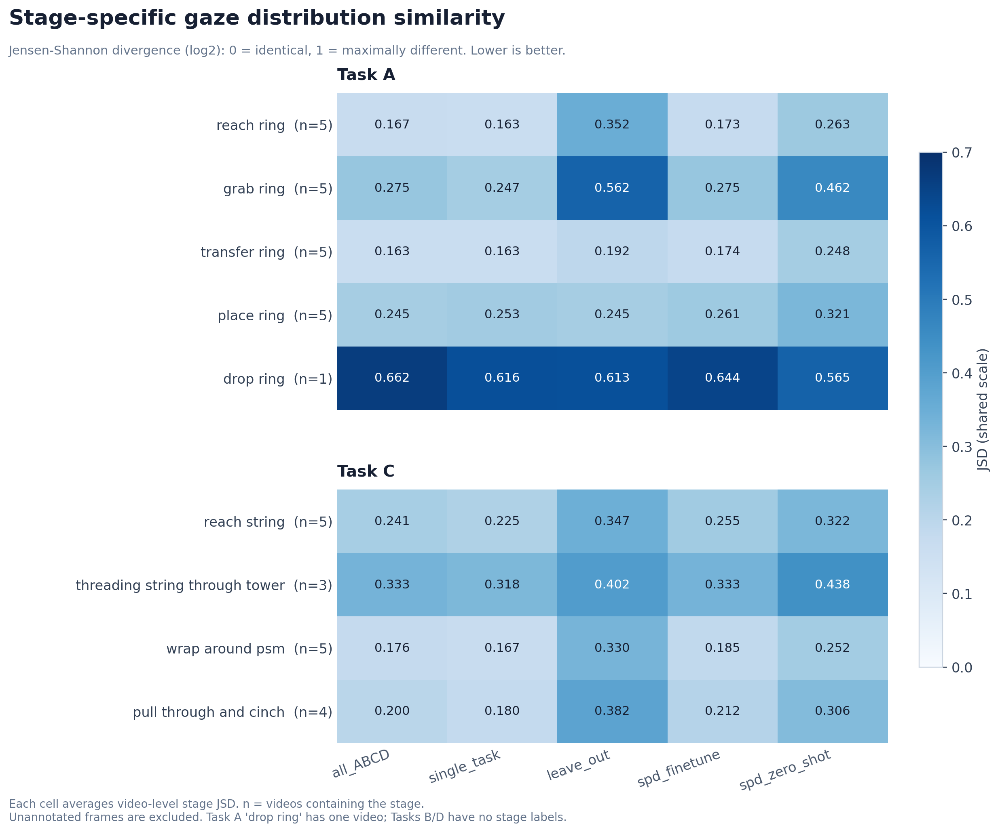

五种模型对 novice active gaze 的复现程度
在本次共同样本上，single_task 的平均逐帧距离最小，为画面对角线的 9.630%（157.73 像素）；leave_out 的误差最大，为 12.604%。
all_ABCD 与 single_task 基本持平：两者平均误差仅相差 0.0038 个百分点。all_ABCD − single_task 的配对差值 95% 置信区间为 [-0.435, 0.287] 个百分点，包含 0，当前结果不支持明确区分这两个模型。
single_task 在 6 个 stage 上的平均 JSD 最低；all_ABCD 在 2 个 stage 上的平均 JSD 最低；spd_zero_shot 在 1 个 stage 上的平均 JSD 最低。stage JSD 反映整体关注位置的分布，不包含阶段内部的注视时序是否一致。
这些结果比较模型接近真实 gaze 的程度。未设定“成功复现”的绝对通过阈值；模型排序本身不能证明已达到人类一致性。
逐帧位置：全部 15 个视频
每帧先计算预测位置与当前 GT 位置的欧氏距离，再在每个视频内取均值，最后对视频等权平均。百分比与像素是同一个距离指标的不同单位；全部视频均为 1280 × 1024。
| 排序 | 模型 | 距离 / 对角线 | 95% 置信区间（%） | 距离（像素） | 视频数 |
|---|---|---|---|---|---|
| 1 | single_task | 9.630% | [8.029, 11.636] | 157.73 | 15 |
| 2 | all_ABCD | 9.634% | [8.179, 11.453] | 157.79 | 15 |
| 3 | spd_finetune | 9.824% | [8.316, 11.705] | 160.90 | 15 |
| 4 | spd_zero_shot | 11.738% | [10.387, 13.461] | 192.24 | 15 |
| 5 | leave_out | 12.604% | [10.943, 14.708] | 206.43 | 15 |
置信区间：以用户为单位的聚类 bootstrap（10,000 次），保留同一用户的视频关联。SPD finetune 先分别计算 seed 42、43、44 的指标，再平均；其余模型使用现有的单个 seed 预测。置信区间不表示跨训练 seed 的不确定性。


阶段关注分布：A、C 任务
对“视频 × stage”分别计算 JSD，再在相同任务与 stage 内对视频等权平均。JSD 使用以 2 为底的对数，范围为 0–1，0 表示分布一致。表中蓝色粗体是该行最低值。
Task A
| stage | 视频数 | 有效帧 | all_ABCD | single_task | leave_out | spd_finetune | spd_zero_shot |
|---|---|---|---|---|---|---|---|
| reach ring | 5 | 19,738 | 0.1675 | 0.1629 | 0.3525 | 0.1726 | 0.2629 |
| grab ring | 5 | 8,022 | 0.2754 | 0.2475 | 0.5625 | 0.2751 | 0.4620 |
| transfer ring | 5 | 20,589 | 0.1627 | 0.1629 | 0.1922 | 0.1741 | 0.2478 |
| place ring | 5 | 11,486 | 0.2450 | 0.2530 | 0.2454 | 0.2610 | 0.3207 |
| drop ring | 1 | 30 | 0.6621 | 0.6158 | 0.6130 | 0.6439 | 0.5651 |
Task C
| stage | 视频数 | 有效帧 | all_ABCD | single_task | leave_out | spd_finetune | spd_zero_shot |
|---|---|---|---|---|---|---|---|
| reach string | 5 | 14,446 | 0.2413 | 0.2249 | 0.3466 | 0.2552 | 0.3223 |
| threading string through tower | 3 | 830 | 0.3330 | 0.3179 | 0.4025 | 0.3335 | 0.4382 |
| wrap around psm | 5 | 21,433 | 0.1756 | 0.1669 | 0.3298 | 0.1848 | 0.2515 |
| pull through and cinch | 4 | 8,392 | 0.2005 | 0.1797 | 0.3820 | 0.2122 | 0.3063 |
视频数与有效帧数均来自当前参与计算的数据。A 的 drop ring 只有一个视频、30 个有效帧，结果仅描述该视频。不同 stage 的样本规模不同，不把这些 stage 简单合并成额外的总体 JSD 排名。

计算口径与数据匹配
坐标：对每帧保存的 32 × 40 概率图 P，使用概率加权均值：x̂ = ΣP(r,c)·c/39，ŷ = ΣP(r,c)·r/31。不是 argmax，也不从 64 个随机样本中选择最接近 GT 的一个。
距离：d = √[(1279·(x̂−xGT))² + (1023·(ŷ−yGT))²]，报告 100·d/√(1279²+1023²)。使用当前 NPY 中有限且位于 [0,1] 的 gaze，并要求所有模型均有有效预测。
stage 分布：预测分布是该 stage 共同有效帧的完整概率图均值。GT 每帧在相同 32 × 40 网格上生成 σ = 1 网格单位的归一化高斯图，再平均。保持模型的完整分布，不把均值坐标重新画成模型热图。
JSD：M=(P+Q)/2，JSD=½ΣP·log₂(P/M)+½ΣQ·log₂(Q/M)。每个视频、stage、seed 独立计算后，再按约定汇总；零概率项贡献记为 0。
- 数据筛选为
domain=active、meta.split=test、meta.src_skill=novice。视频与模型文件通过 content_id 和任务对应。 - 使用 prediction 的
frame_index索引 NPY 行，并核验原始Frame_Number。原始帧号不直接作为行号。当前部分时间戳异常，因此不用于匹配。 - 直接读取原始 NPY 以保留
stage。A、C 的空 stage 和none不参与 stage JSD，但有效 gaze 帧仍进入整体距离。B、D 没有 stage 字段，因此本次不计算其 stage JSD。 - 当前
User7_1_1、User9_7_1、User11_6_1、User12_3_1的 GT 坐标与 prediction 缓存 target 不同。本次以当前 NPY 为准，不复用旧日志中的指标。 - single_task 与 leave_out 按测试任务选择 A/B/C/D 对应模型；spd_finetune 的三个 seed 先算指标后平均，没有平均概率图来构建集成模型。
下载数据表
总体距离对比表 · 视频级距离明细 · 模型配对距离差值 · stage JSD 对比表 · 视频级 stage JSD 明细 · Excel 对比表 · 输入文件清单 · 数据核验记录